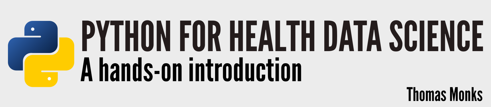

Preface¶
Welcome to my online textbook for learning enough python to be a credible data scientist.
The book was written with three audiences in mind
Post-graduate students studying or researching a health data science related topic
My MSc students in health data science at the University of Exeter. Indeed I use this book in the module coding for ML and data science.
Health service analysts (particularly in the UK’s NHS) who are looking to boost their python skills to be a more rounded data scientist.
The book aims to support these groups because data science is a rapidly evolving discipline that offers huge potential for the future of health care, medicine and wider areas of science. I’m very exited about health data science using python and you should be too. We now have wonderful python machine learning packages such as sklearn, keras + tensorflow and pytorch. These packages are very easy to use and scripting in them can be learnt using more online tutorials than you can count. For that reason I am not going to write about these popular machine learning packages in this book. I don’t really care if you can write an sklearn script. Instead I’m going to focus on making you a more rounded data scientist that can write code that’s going to stand the test of time. My aim is that, by the end of the book, you will be able to write clean code that can be confidently published alongside your research, can be run by others and can be returned to by yourself in 5-10 years and still understood (the person most likely to reuse your work is you!). By the end of the book you will be a health data scientist and a “coder” (or if you are old like me a “programmer”) and view code as a first class citizen in your data science projects. You will be able to focus on the data science as opposed to getting bogged down in the frequent coding problems you will face in real studies. This means we are going to focus a bit on code design, a bit on scientific problems, a bit on statistical programming and a bit on the management and deployment of data science code projects.
This all sounds a bit pretentious doesn’t it? Well perhaps a bit, but it comes from a good place. Through my work I regularly meet people and students within the data science discipline who can use a package such as sklearn, but can’t implement a very basic algorithm in python (or anything else), control code dependencies and versioning, and (to my horror) have manual (or semi-manual) pipelines for wrangling their data in shape. These data scientists would be far more employable and useful to an organisation if they took their coding to the next level. To be more blunt kids there’s money, kudos, better science, and real benefits for society that are up for grabs if people were willing to put in the effort.
The book is powered by Jupyter Book. This means that the parts of the book containing code (with a few minor caveats) are executable online using BinderHub or the free version of Google Colabratory. To use Google Colab you will need to login to a Google account. BinderHub does not require a login. You can also download sections of the book as Jupyter notebooks (.ipynb) that you can run locally and with higher performance in Jupyter-Lab or Notebook.
My decision to make the textbook entirely open and free is influenced by three factors. The first is Dr Michael Allen’s - relentless and subversive - crusade to make science more open and democratic in our discipline. Over time it appears some of his philosophy has rubbed off on me as well; or he has shamelessly brainwashed me. Either way I agree that data science and the knowledge that underpins it should be free to all. The second influence was Rob J Hyndman’s and George Athanasopoulos’ fantastic and hugely successful online textbook forecasting: principles and practice. After reading an early edition of this many years ago I was immediately convinced of the benefit of sharing and updating knowledge in this way. I’ve partly modelled the book on these ideas and content will be continually updated to remove errors and expanded WITHOUT needing to purchase a new edition. I’ll archive all editions permanently at Cern via Zenodo (I’m confident this is a good place and will make it to the heat death of the universe). Finally, when I saw the wonderful Jupyter Book project I knew immediately that this was the right tool to create a book of my own. The team that develop Jupyter book are so fantastic I even forgive them for changing the way Juypter Book table of content pages work between versions 0.10 and 0.11. As I write this the book is served up for free via Microsoft’s GitHub pages and provides interactive code for you to run in the cloud. The book title image and python symbol were created by me in Inkscape.
I don’t have a copy editor…sorry. Instructions for reporting mistakes and any garbage is here.
I hope the book is useful to you whatever area of data science you are working in. I’ll admit that I’ve not been able to cover everything I had originally planned for this first edition. If you have content ideas do let me know via the GitHub repo issues and you might find them, along with credit, in a future release!
Work hard and code every day!
Tom Monks September 2021.
Creative Commons License¶¶
All written content in this book (this includes all files and content in the content/ folder) is shared under CC BY 4.0.
You are free to:
Share - copy and redistribute the material in any medium or format
Adapt - remix, transform, and build upon the material for any purpose, even commercially.
You must give appropriate credit, provide a link to the license, and indicate if changes were made. You may do so in any reasonable manner, but not in any way that suggests the licensor endorses you or your use.
License info: https://creativecommons.org/licenses/by/4.0/
Code: MIT Licensed¶
All code in this book is licensed under a MIT permissive license